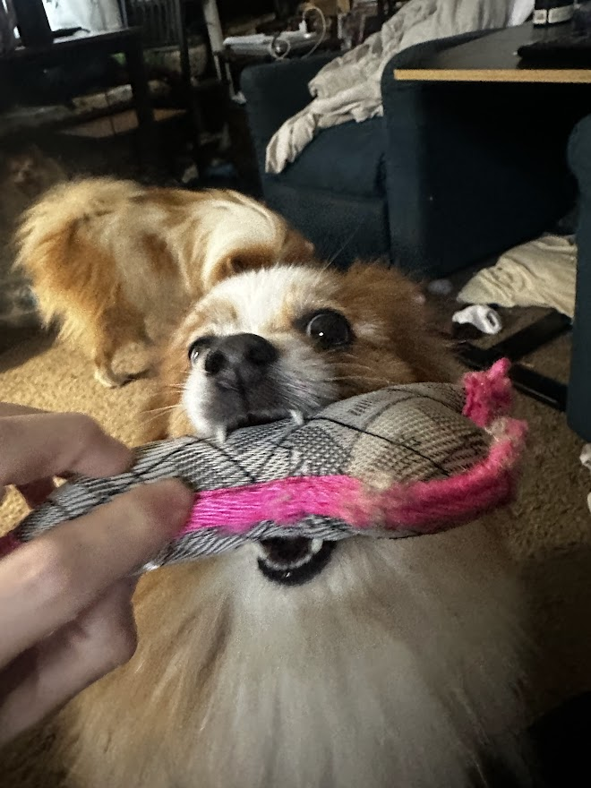
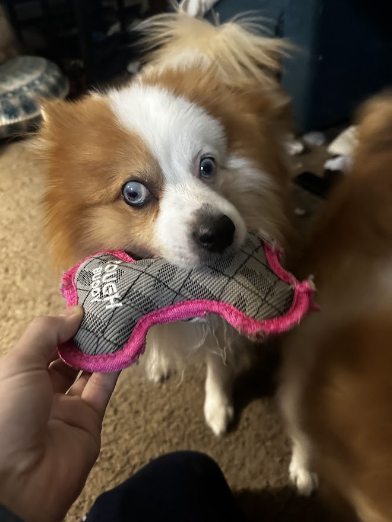
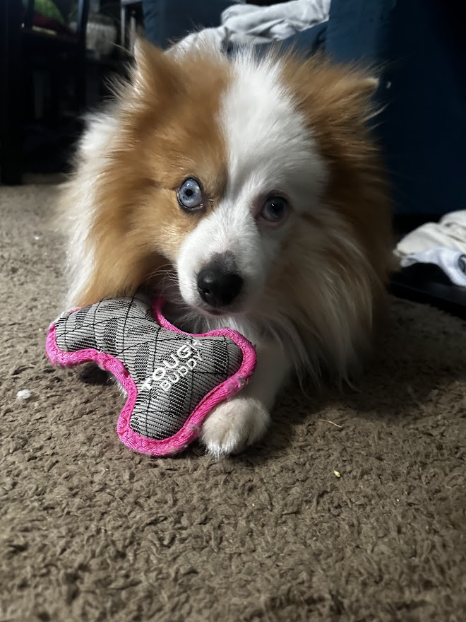
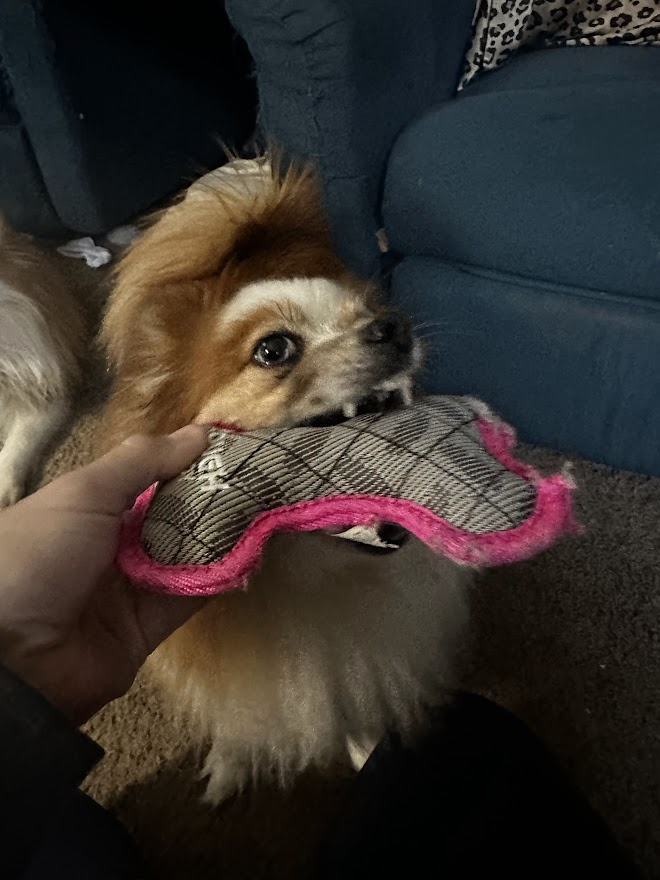

Is your dog a power chewer? The Tough Buddy Small Chew Toy might just be what you're looking for! Designed with durability in mind, this toy is made to withstand even the toughest chewers while keeping your pup entertained for hours.
Crafted from tough, non-toxic rubber, the Tough Buddy Chew Toy is built to last. Its unique design provides your dog with a satisfying chewing experience, helping to reduce anxiety and promote healthy teeth and gums.
This chew toy is perfectly sized for smaller dogs and is great for interactive play. Whether your dog is enjoying a solo chewing session or engaging in a game of fetch, the Tough Buddy is up to the task. Its vibrant colors and fun texture make it an appealing choice for both dogs and owners alike.
With its tough, yet flexible material, the Tough Buddy Small Chew Toy can withstand intense chewing, making it a long-lasting and reliable option for your pup. It's also dishwasher safe for easy cleaning.
Purchase From Amazon: https://www.walmart.com/ip/Vibrant-Life-Tough-Buddy-Dog-Chew-Toy-Bone-Assorted-Colors-May-Vary